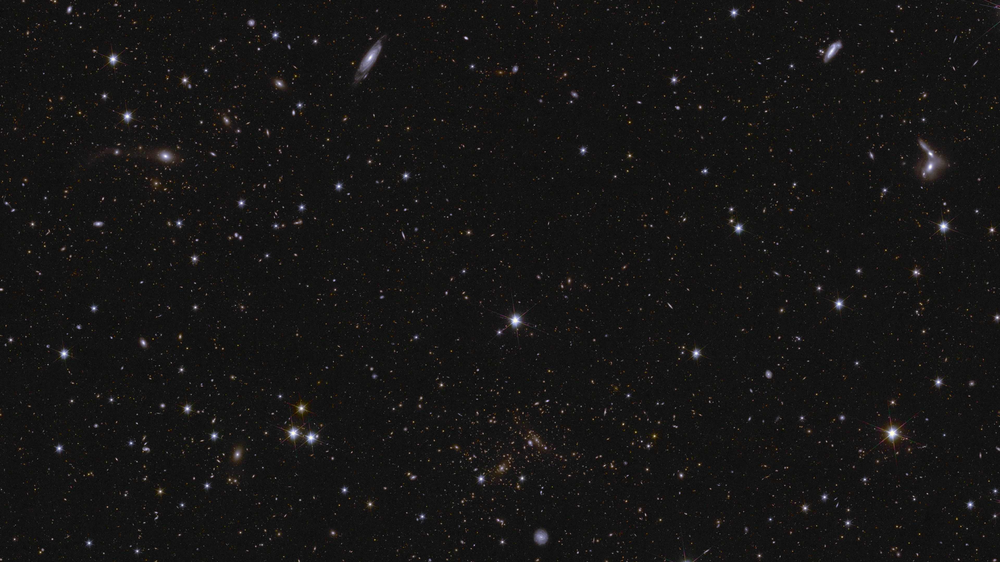
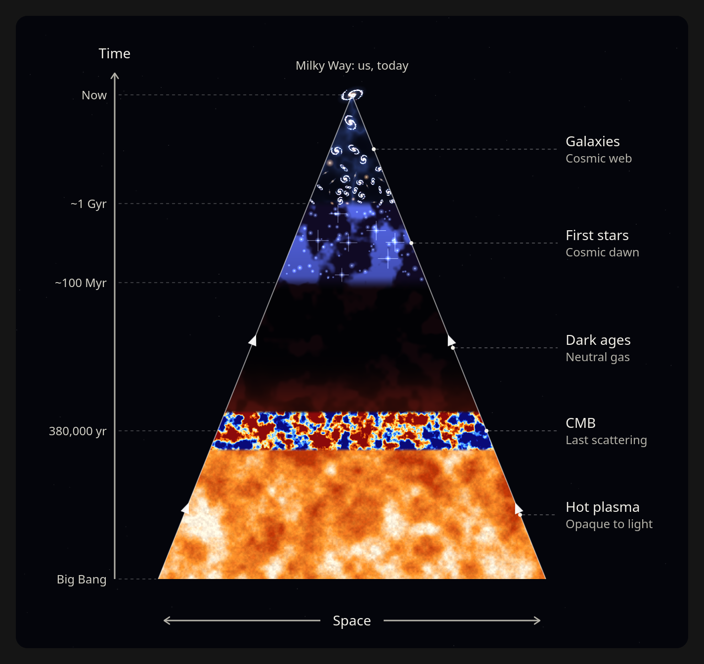

Introduction
The universe is made up of all kinds of things, but when we look far enough, we see only one: galaxies. Each galaxy is an extremely complex structure on its own, but when we study the universe as a whole, we can think of galaxies as single points on a 3D canvas. From a cosmologist's point of view, galaxies are useful because they trace the distribution of dark matter, which fills the universe. If you'd like to know a little more about how scientists study the universe, this section is for you.

A deep-field image from the Euclid space telescope. Each bright point in the image is a galaxy filled with hundreds of billions of stars. Each galaxy is covered in an invisible halo of dark matter.
Cosmology
Cosmology is the study of the nature and evolution of the universe. Such a subject might seem impossible to approach, but it turns out we can derive an astounding amount of information just by looking at the night sky, whether with our eyes or, more recently, with big telescopes.
To understand how we reached the most important conclusions in cosmology, we first need to clear up a misconception about what we mean by "the universe". When scientists use the word, they really mean the observable universe: the portion we can gather information about through the light that reaches us today.
Light takes a finite amount of time to travel, so the light we see from very distant galaxies may have taken billions of years to reach us. It is a window into the early universe. In fact, we can't interact at all with distant galaxies as they are now. Because the speed of light is finite, it's even questionable to talk about "the present": there is only a time relative to a given observer.
We can only gather information about galaxies located in our past light cone.

The image shows our past light cone, i.e., the portion of the universe we can observe thanks to the finite speed of light. Notice that at the present cosmic time, denoted by the Y axis, we cannot gather information about the "present universe": the light emitted now by distant galaxies will only reach us in the far future.
The finite speed of light is not the only limit. The universe is also expanding, so there are regions we will never be able to see.
But what do we mean when we say the universe is expanding? What is it expanding into?
The first crucial observation astronomers made is that distant galaxies seem to be receding from us, and, more importantly, that the farther away a galaxy is, the faster it recedes. This tells us two things.
First, we are in no special place in the universe. You might be tempted to think that since everything is receding from us, we must be at the center. But the universe can have no center: if it did, it would also have boundaries, a border we could cross. And if the universe is all there is, it cannot have a boundary.
Having no boundaries might lead you to think the universe must stretch out to infinity, but that isn't the only possibility. To see why, think about the surface of a sphere. It contains a finite amount of 2D space, since each point can be described by just two coordinates (think of latitude and longitude on Earth), yet it has no boundary. Now extend this to one dimension higher and you get a three-sphere: just like the sphere, but with a finite amount of 3D space and no boundaries. We can't fully visualize it, because it lives in 4D space.
image of the sphere and the torus and other 2D surfaces
The second thing the observation tells us is that if galaxies are moving farther apart, then going back in time they must have been closer together. This is only one piece of evidence for a Big Bang-like beginning of the universe, and by itself it is far from conclusive. Fortunately, cosmologists of the 20th century gathered much more. As we go back in time, the universe becomes hotter and denser, until we reach a point where known physics can no longer describe it. We can't know the very initial state of the universe, both because our telescopes can't look back that far and because we can't recreate the extreme temperatures of the early universe in laboratories on Earth.
We've drifted a little from an important point, though: why do galaxies seem to be receding from us? In reality, they aren't receding only from us but from everybody else too. If you sat on any galaxy in the universe, every other galaxy would appear to be moving away from you. Imagine an inflating balloon: every point on its surface moves away from all the other points.
The spots are painted on the rubber. As the balloon inflates, each spot stays the same size but every spot gets farther from every other one.
Space itself stretches. Galaxies stay in their place on the grid, and the grid between them grows. Slide back in time and a finer grid appears.
Why is the universe expanding?
To answer this, we need to understand the forces that govern the expansion. The only force that acts over long distances is gravity, so we need a good theory of it. Our best description is the Theory of General Relativity, formulated by Einstein in the early 20th century. It proposes that although gravity looks like a force, it is better described through the geometry of space and time: objects with mass attract each other because of the curvature they create in spacetime. As the physicist J.A. Wheeler put it, "Matter tells spacetime how to curve. Spacetime tells matter how to move."
Solving the equations of general relativity for the universe as a whole tells us that it must either contract or expand, depending on its energy content. Our observations show that this content is dominated by two components we can't directly observe: dark matter, and a repulsive force of unknown origin that we call dark energy. Unveiling the nature of these components is one of the main efforts of cosmology today.
Large-scale structure and its connection to gravity
How do we describe the large-scale structure of the universe?
To explain the large-scale structure of the universe, we use statistical tools rather than deterministic ones. There are two reasons for this. First, we don't have access to the initial conditions. Second, the structure of the universe evolves over very long timescales, so we can't follow the evolution of individual galaxies in a short time frame.
(Deterministic systems: in non-quantum physics, systems are deterministic, meaning that given the initial conditions, they evolve according to precise laws that predict their future. Think of the position and velocity of a thrown ball, or just about anything else in the natural world.)
So instead we use statistical tools that summarize the large-scale structure of the universe with a limited number of variables.
One of the most important is the two-point correlation function (2PCF). It quantifies the excess probability, compared to a random distribution, of finding two galaxies (treated as point-like objects) at a given distance from each other. In a universe where galaxies were distributed completely at random, the 2PCF would equal zero at every distance. If it is positive at some distance, galaxies are correlated at that scale: it's more likely to find two of them separated by that distance than it would be by chance. Conversely, if it is negative at some distance, galaxies are anti-correlated at that scale.
From observations, we know the 2PCF is positive at relatively small cosmic distances (the typical separation between galaxies). For some reason, the universe likes to cluster galaxies that are close to each other.
Why does that happen? Gravity!
Gravity naturally pulls massive objects that are close to each other even closer. This is why the universe is structured like a web: regions of lower density, which we call voids, grow progressively larger, while regions of higher density become denser over time, forming galaxy clusters at the nodes of the web.